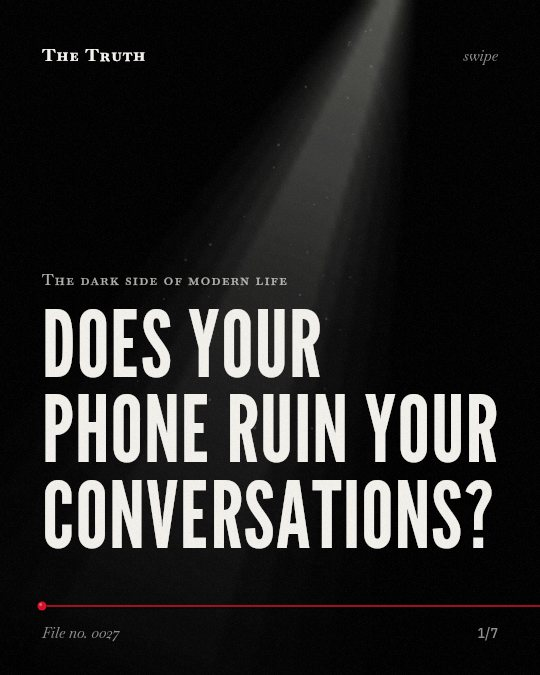

The dark side of modern life
Does your phone ruin your conversations?

The presence of a phone does not always hurt conversation quality.
Research on whether a phone on a table ruins a conversation shows mixed results. It depends on the type of interaction and who is talking.
Established. Several studies combined, or official data. The evidence is mixed.
What the research found
A meta-analysis did not provide support for the idea that the mere presence of a phone leads to more negative perceptions of a partner.
“Six of these investigations focused on the “mere presence effect,” which asserts that the presence (but not use) of a mobile phone leads to more negative perceptions of one’s interactional partner. The meta-analysis did not provide support for this effect.”
Meta-analysis, 2020. Courtright & Caplan, Human Communication & Technology.
The presence of a smartphone did not affect the quality of serial argument conversations for most people.
“Overall, results showed little evidence that the presence of a participant’s smartphone affected the quality of serial argument conversations”
Experiment, 2020. Roaché et al., Human Communication & Technology.
The presence of a smartphone negatively impacted conversation satisfaction and perceived conversation effectiveness more for women than for men.
“biological sex moderated the impact of technology on conversation satisfaction and perceived conversation effectiveness, such that technology presence negatively impacted women more than men.”
Experiment, 2020. Roaché et al., Human Communication & Technology.
The mere presence effect can be modulated by how appealing a device is to an individual.
“These results suggest that the mere presence effect can be modulated by individual differences in the degree to which a device is appealing.”
Experiment, 2016. Ito & Kawahara, Japanese Psychological Research.
The mere presence of mobile phones can have negative effects on closeness, connection, and conversation quality.
“In both, we found evidence they can have negative effects on closeness, connection, and conversation quality.”
Experiment, 2012. Przybylski & Weinstein, Journal of Social and Personal Relationships.
Phone users were perceived as significantly less polite and attentive during a conversation.
“A 3 × 1 experiment revealed that phone users were perceived as significantly less polite and attentive”
Experiment, 2016. Abeele et al., Computers in Human Behavior.
The impact depends on the context.
A phone may harm closeness and connection. However, it may not affect serial arguments. For some, the effect is stronger for women than for men.
Your attachment to the device matters.
The way a phone affects a conversation may be modulated by how appealing that specific device is to you. Your personal connection to the object changes its weight.
This part is our reading of the evidence, not a finding.
A dinner table in a quiet apartment.
You sit across from someone. A smartphone lies between you. You both reach for it without speaking. You are together, but you are not connected.
The honest summary
The evidence is mixed, showing that while phone use (phubbing) consistently harms perceptions, the mere presence of a phone has inconsistent effects depending on the context and individual traits.
The findings are influenced by specific variables such as the type of conversation (e.g., serial arguments), the gender of the participants, and individual levels of device attachment.
Is your phone a tool or a barrier?
Sources
- Andrew K Przybylski, Netta Weinstein (2012). Can you connect with me now? How the presence of mobile communication technology influences face-to-face conversation quality. Journal of Social and Personal Relationships. Experiment, cited 744 times.
- Mariek Vanden Abeele, Marjolijn L. Antheunis, Alexander Schouten (2016). The effect of mobile messaging during a conversation on impression formation and interaction quality. Computers in Human Behavior. Experiment, cited 296 times.
- David J. Roaché, John P. Caughlin, Ningxin Wang et al. (2020). The Presence of a Mobile Phone Does Not (Necessarily) Change the Fundamental Processes of Face-to-Face Relational Conflict. Human Communication & Technology. Experiment, cited 7 times.
- John A. Courtright, Scott E. Caplan (2020). A Meta-Analysis of Mobile Phone Use and Presence. Human Communication & Technology. Meta-analysis, cited 40 times.
- Motohiro Ito, Jun‐ichiro Kawahara (2016). Effect of the Presence of a Mobile Phone during a Spatial Visual Search. Japanese Psychological Research. Experiment, cited 42 times.
Also read for this file, not quoted
This file was researched and drafted by software, then checked by rules a model cannot talk its way around: each quote above was matched word for word against the paper, and every number had to appear in it. How files are made.